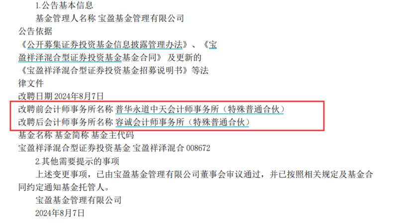
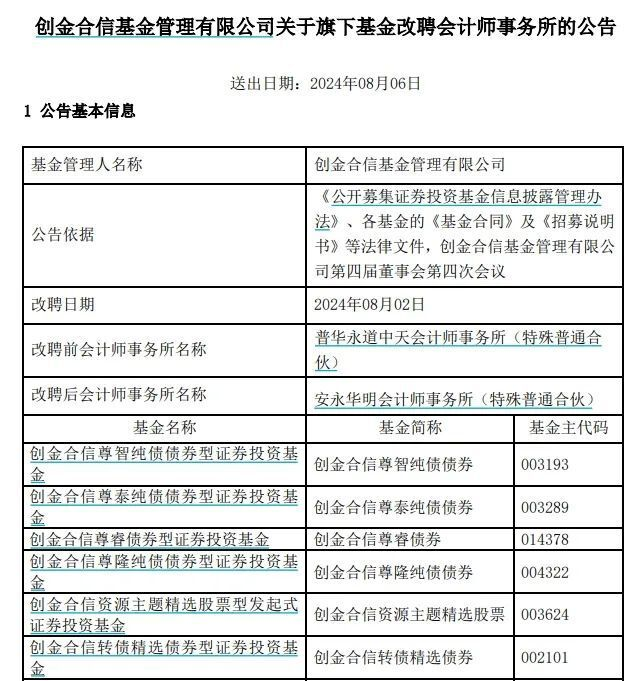

全球知名会计师事务所普华永道近期遭遇的解聘风波也许已经蔓延到了基金行业。公告显示，部分基金公司近期为旗下基金改聘会计事务所，普华永道被更换。
部分基金公司解聘普华永道
8月7日，宝盈基金发布公告表示，即日起，将旗下宝盈祥泽混合的会计师事务所由普华永道中天会计师事务所（特殊普通合伙）改聘为容诚会计师事务所（特殊普通合伙）。上述变更事项，已由宝盈基金董事会审议通过，并已按照相关规定及基金合同约定通知基金托管人。

8月6日，创金合信基金发布关于旗下基金改聘会计师事务所的公告，涉及51只基金。公告显示，改聘日期为8月2日，改聘前会计师事务所为普华永道中天会计师事务所，改聘后为安永华明会计师事务所。

此前的6月29日，红土创新基金公告称，自6月25日起，公司旗下22只基金的会计师事务所由普华永道中天改聘为安永华明会计师事务所。
一位基金公司人士表示，基金管理人会经过全面考虑公司对审计服务的需求，并参照会计师事务所选聘相关规定，经过招标程序和评标结果，决定聘请某一会计师事务所作为公司财务报表及内部控制审计机构。
另一位业内人士介绍，“一般情况下，基金公司可能会根据审计费用、服务年限、独立性要求等因素定期变更会计师事务所，改聘并不少见，但也并不频繁。”在他看来，基金公司将普华永道更换成其他会计师事务所，与普华永道的信誉危机不无关系。
“未来也许会有更多基金公司更换掉普华永道，尤其是此前的审计机构相关签约已经到期的公司会率先行动。”他进一步说。
Wind数据显示，目前市场上12088只公募基金（仅统计主代码）中，5432只基金的审计机构为普华永道会计师事务所，占比近半，在全部24家担任审计机构的会计师事务所中遥遥领先。
遭金融机构批量解聘
因牵涉知名房企财务造假，普华永道正经历一场信任危机，接连丢失了多笔金融机构大单。
公开资料显示，普华永道是由普华会计师事务所和永道会计师事务所于1998年在英国伦敦合并而成，也是国际四大会计师事务所之一，另外三家分别为毕马威、德勤和安永。
5月31日，证监会官网发布对恒大地产债券欺诈发行及信息披露违法案作出处罚决定，对恒大地产责令改正、给予警告并罚款41.75亿元。证监会同时表示，正在推进对相关中介机构的调查。其中，最受关注的中介机构便是普华永道。
此前，普华永道作为中国恒大2009年上市以来的审计机构，合作长达14年直到2023年1月解除合作，过去十余年，中国恒大每年审计报告均由普华永道出具无保留意见。事实上，在处罚“靴子”落地前，普华永道已因恒大地产审计案陷入信任危机。
在今年三月份，恒大地产因涉嫌债券信息披露违法的问题已被中国证监会调查结束。中国财政部在深入调查后，发现普华永道在恒大集团会计做法上可能存在不法角色，因此决定对其采取严厉的处罚措施。
受此影响，多家上市公司和金融机构已经取消了与普华永道的合作。就金融机构而言，中国太平、中国人保、中国人寿等上市险企相继宣布解聘普华永道；中邮保险、财信吉祥人寿、三峡人寿等非上市险企，最近也宣布和普华永道“分道扬镳”。
此外，中国银行、招商银行、杭州银行、海通证券、中国信达等大型上市金融机构也纷纷与普华永道解约。